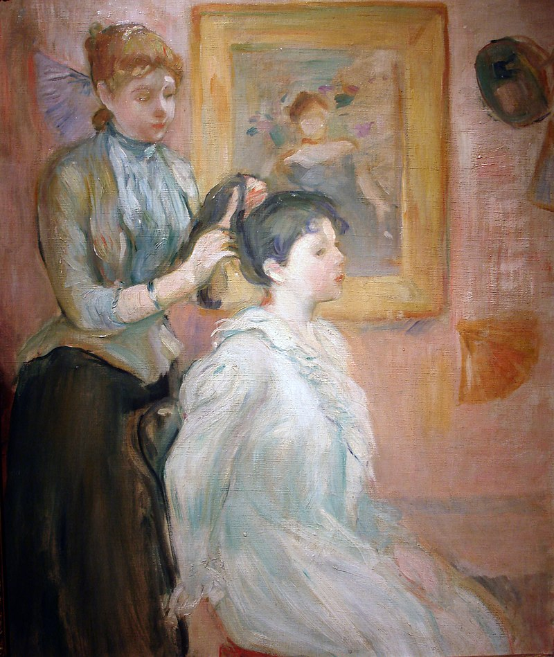
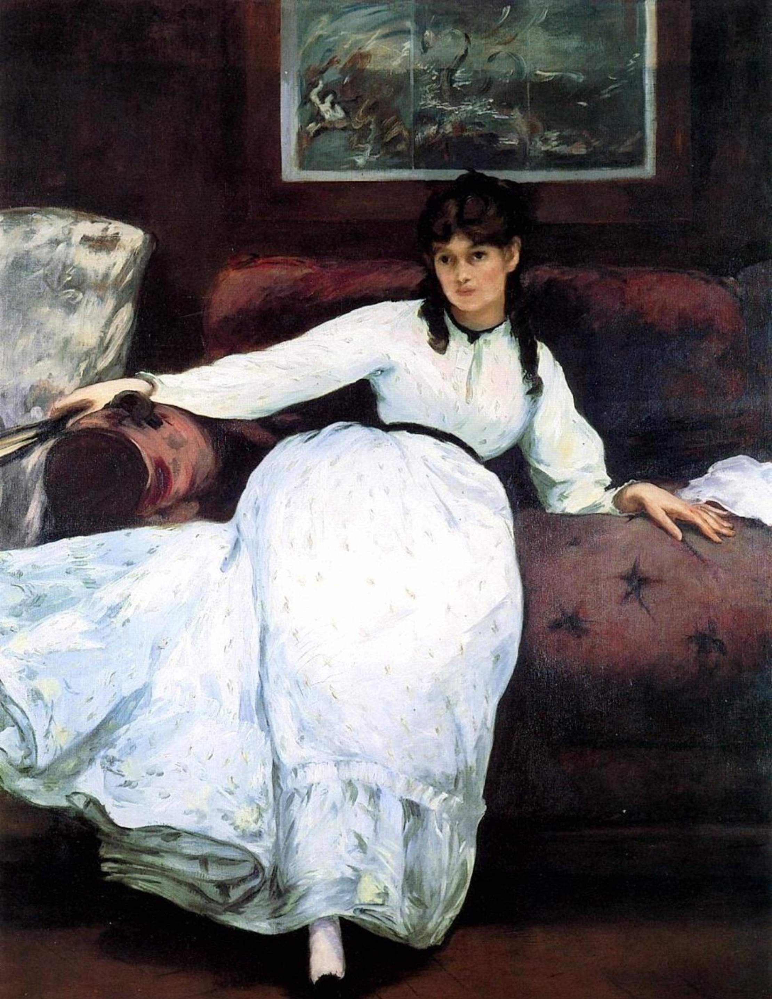
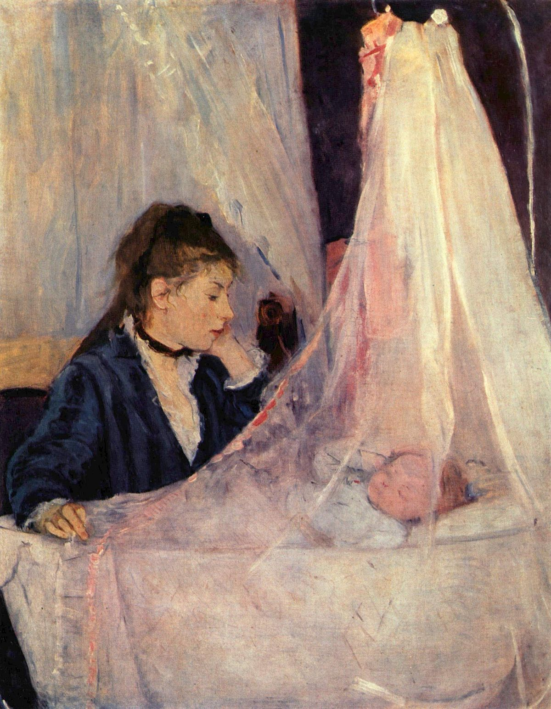
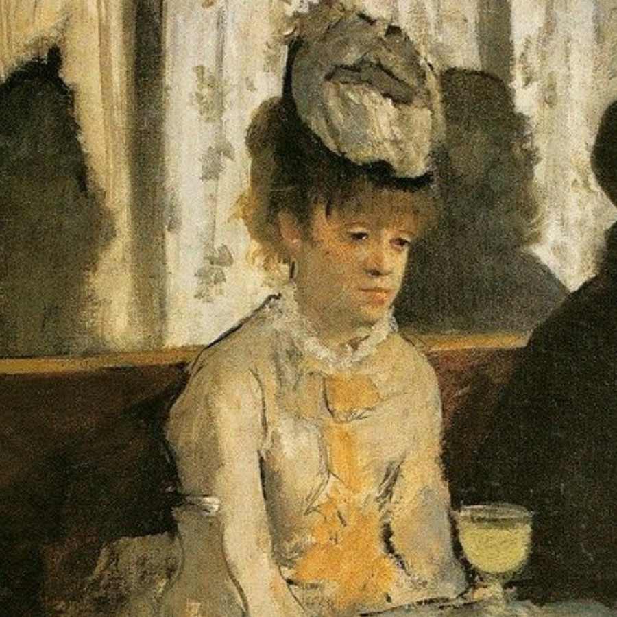

Nonostante le difficoltà che le donne artiste affrontavano all'epoca, Morisot riuscì a ottenere riconoscimento e rispetto nel mondo dell'arte, lasciando un'eredità duratura. Morì a Parigi nel 1895, lasciando un'impronta indelebile nella storia dell'arte.
I soggetti di Morisot
Berthe Morisot prediligeva dipingere scene di vita quotidiana, con un’attenzione particolare ai soggetti domestici e familiari. Le sue opere spesso raffiguravano donne e bambini in ambienti intimi e rilassati, come giardini, salotti e camere da letto.
Era attratta dalla bellezza e dalla tranquillità della vita privata, e questo si rifletteva nelle sue delicate pennellate e nell’uso sapiente della luce. Morisot trovava ispirazione anche nei paesaggi e nella natura, dipingendo en plein air per catturare l’atmosfera e le variazioni di luce.
La figlia Julie, così come altre donne della sua famiglia, erano soggetti ricorrenti nei suoi dipinti, incarnando il suo interesse per le relazioni intime e la femminilità. Morisot riusciva a trasformare la quotidianità in poesia visiva, conferendo un senso di eleganza e leggerezza ai suoi soggetti preferiti.

La pettinatura , 1894

Eugène Manet e sua figlia nel giardino di Bougival - 1881, olio su tela, Parigi.
La relazione con i fratelli Manet
Berthe Morisot, una delle poche pittrici dell’impressionismo, ha avuto un rapporto profondo e complesso con i fratelli Édouard e Eugène Manet.
La relazione con Eugène fu intima: nel 1874, Berthe sposò Eugène Manet, un pittore meno conosciuto ma comunque talentuoso. Il matrimonio consolidò ulteriormente il legame tra Berthe e la famiglia Manet, permettendole di continuare a dipingere e ad essere attivamente coinvolta nel circolo impressionista.
Con Édouard, pittore celebre e figura di spicco del movimento, Berthe ha instaurato una relazione sia professionale che personale molto intensa. Édouard l’ha ritratta diverse volte, evidenziando la stima e l’ammirazione che nutriva per lei, e il loro legame ha influenzato notevolmente lo stile di entrambi, con scambi artistici e ispirazioni reciproche.
Quella tra Édouard Manet e Berthe Morisot fu una travagliata storia d’amore intrisa di passione, che ebbe luogo alla fine del XIX secolo. Questo sentimento, però, non trovò sfogo che nelle menti e nei cuori dei due brillanti artisti. Impossibilitati dai rispettivi obblighi coniugali e dalle costrizioni morali imposte dalla società, crearono una dimensione artistica tutta per loro, all’interno della quale trovarono la loro libertà, trascorrendo ore fatte di dichiarazioni d’amore e dolci parole sospirate.
In un tempo in cui le donne erano vittime di regole rigide circa la vita sociale e, ancor più, professionale, l’aspirante pittrice impressionista Berthe Morisot mise a repentaglio la propria reputazione per posare come modella per Manet, che si era già guadagnato una cattiva fama con Olympia e Colazione sull’erba.

Il Riposo - Eduard Manet - 1870
Il suo essere così aperta e moderna risultava inappropriato per una donna dell’alta società dell’epoca, in cui perfino girare tutta sola era considerato un taboo. Dall’arte della Morisot trasparivano le profonde differenze che esistevano tra uomini e donne anche in campo artistico. Tuttavia, nonostante fosse costretta a rispettare determinate restrizioni, come quella di poter rappresentare esclusivamente scene domestiche che avessero come protagonisti prevalentemente donne e bambini, la Morisot consentì a Manet di sfruttare la propria immagine, sebbene ciò fece di lei una figura controversa all’interno dei circoli d’arte parigini.
Il rapporto con i fratelli Manet ha giocato un ruolo cruciale nella carriera di Berthe, sia dal punto di vista artistico che personale, supportandola e arricchendola in modi profondi e duraturi.
Può interessarti anche:

Eva Gonzalès
Conosci Eva Gonzalès, una pittrice impressionista francese, conosciuta per i suoi ritratti e scene di vita quotidiana.
Scopri di più
Mary Cassatt
Conosci Mary Cassatt, pittrice incisora americana, famosa per i suoi dipinti di donne e bambini e della vita quotidiana.
Scopri di più

Altre opere di Morisot
Esplora altre opere d'arte di Berthe Morisot e il suo contributo all'arte impressionista.
Scopri di più

Impressionismo
Scopri di più sul movimento impressionista, lo stile caratterizzante e i suoi artisti più rappresentativi.
Scopri di più
Lascia un commento!
Facci sapere cosa ne pensi, lasciando un commento qua sotto
Registrati
Registrati per salvare i tuoi quadri preferiti in galleria!